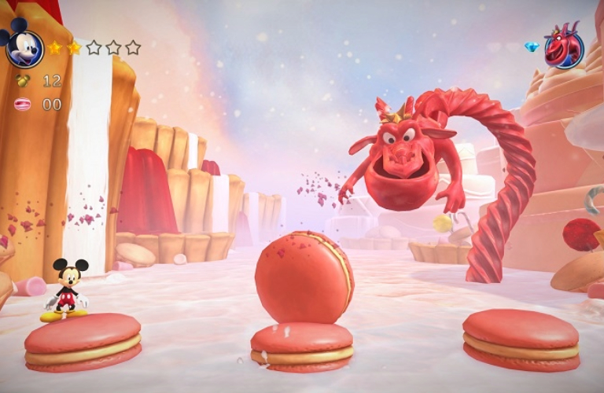

Os videogames transcendem o simples ato de jogar, oferecendo experiências imersivas que combinam tecnologia, arte e narrativa. Seja explorando mundos fantásticos, enfrentando desafios estratégicos ou conectando pessoas ao redor do mundo, eles se consolidaram como uma das formas de entretenimento mais influentes da atualidade. Descubra neste espaço tudo sobre esse universo fascinante, dos clássicos aos lançamentos inovadores.
Review da semana: Resident Evil 4 (2023)
Resident Evil 4 Remaster moderniza o título original com visuais impressionantes em alta definição, iluminação realista e texturas detalhadas, elevando a atmosfera do jogo. A gameplay foi ajustada com controles mais fluidos e mecânicas atualizadas, preservando a essência do original enquanto o torna mais acessível e dinâmico. Os personagens foram remodelados com maior realismo e profundidade, mostrando uma aparencia mais madura. Ashley ganhou um estilo mais prático e moderno, refletindo uma abordagem mais ativa e menos dependente, nessa versão não temos ela gritando o famoso bordão "HEEEEEELP ME LEOON" a cada cinco minutos, e ela consegue acessar locais e descobrir itens secretos que ajuda durante a jornada. Luis Sera teve sua história expandida, aprofundando seu papel na narrativa e acrescentando nuances à trama. Uma ausência notável é a campanha adicional de Ada Wong (Separate Ways), que não está presente no jogo base, deixando um ponto importante da história para uma possível futura atualização ou DLC.
Resident Evil 4 Trailer
A dificuldade em relação ao original continua com o famoso sistema que vai se adaptando conforme a habilidade do jogador, os inimigos estão mais agressivos e estrategistas, procurando sempre encurralar e atacar em bando, enquanto os chefes da área agora contam com três formas mutantes para combater. Um dos chefes foi removido da campanha principal, acredita-se que poderemos encontra-lo na campanha da Ada que virá numa atualização futura. O mini jogo bônus "Os Mercenários" também está de volta, com o mesmo padrão: Eliminar 150 inimigos dentro de um limite de tempo, quatro mapas, conforme você atinge uma pontuação um novo personagem é liberado em cada mapa. Luis foi adicionado como personagem jogável nesse modo de jogo no lugar do Albert Wesker, que era jogável na versão original.
Conclusão: Resident Evil 4 remaster revitaliza um clássico amado, mantendo seu charme original enquanto atualiza elementos cruciais para atender às expectativas modernas, embora a falta de conteúdos adicionais no lançamento seja sentida por alguns fãs, porém conhecendo a Capcom, sabemos que isso tudo será suprido através de um conteúdo adicional pago $$$$.
Nota: 8/10
Os Herois e Vilões da semana
Leon S. Kennedy
Ashley Graham
Jack Krauser
Luis Sera
Bitores Mendez
Ada Wong
Osmund Saddler
Original X Remake
Jogos Antigos Remasterizados: Clássicos Renovados
Jogos antigos remasterizados trazem de volta títulos icônicos com melhorias gráficas, áudio aprimorado e ajustes na jogabilidade para atender aos padrões modernos. Essas versões renovadas mantêm a essência dos clássicos, proporcionando nostalgia para veteranos e uma experiência atualizada para novos jogadores. São uma celebração da história dos games, preservando e revitalizando obras marcantes para novas gerações.
E iniciaremos esse quadro com nosso amado camundongo, que ganhou uma repaginada no classico Castle of Illusion de mega drive para as plataformas da 7° geração.
Castle of Illusion starring Mickey Mouse (1990)

Castle of Illusion starring Mickey Mouse remastered (2013)